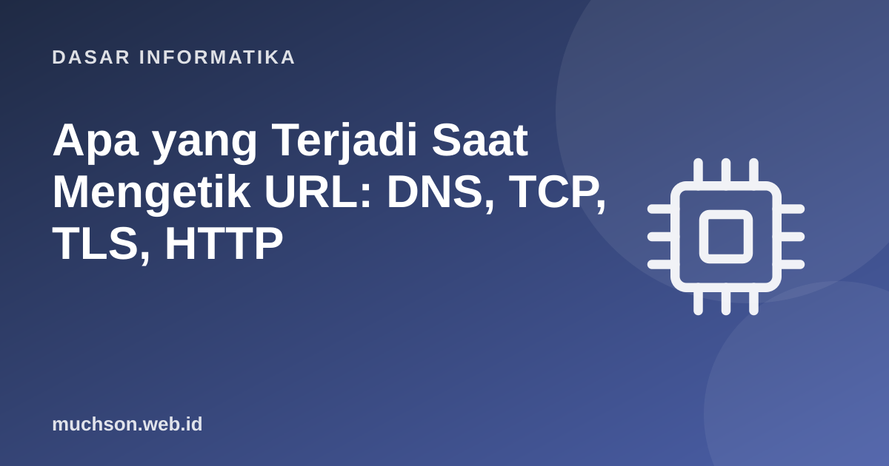

Beranda › Artikel › Dasar Informatika
Dasar InformatikaApa yang Terjadi Saat Mengetik URL: DNS, TCP, TLS, HTTP
Pertanyaan wawancara klasik: "Apa yang terjadi ketika Anda mengetik google.com dan menekan Enter?" Jawabannya merangkum hampir seluruh ilmu jaringan dan web dalam satu cerita: dari teks di bilah alamat sampai piksel di layar, melalui DNS, TCP, TLS, HTTP, dan mesin render. Kita telusuri langkah demi langkah, termasuk melihat percakapan HTTP yang sebenarnya.
Sebaiknya sudah paham: model OSI dan TCP/IP, alamat IP

Setelah membaca dan mencoba materi ini, Anda mampu:
- menguraikan bagian URL
- menjelaskan resolusi DNS dan jenis rekamannya
- menjelaskan jabat tangan TCP dan TLS
- membaca permintaan dan respons HTTP: metode, header, kode status
- menjelaskan caching dan langkah browser merender halaman
Peta perjalanan
1. Anatomi URL
from urllib.parse import urlparse, parse_qs
url = "https://www.contoh.id:8443/artikel/dns?topik=jaringan&hal=2#bagian-3"
u = urlparse(url)
print("skema :", u.scheme) # protokol: https
print("host :", u.hostname) # nama yang akan di-resolve oleh DNS
print("port :", u.port or "(bawaan: 443 untuk https, 80 untuk http)")
print("path :", u.path)
print("query :", parse_qs(u.query))
print("fragmen :", u.fragment, "(tidak pernah dikirim ke server)")skema : https
host : www.contoh.id
port : 8443
path : /artikel/dns
query : {'topik': ['jaringan'], 'hal': ['2']}
fragmen : bagian-3 (tidak pernah dikirim ke server)
2. DNS: dari nama ke alamat
Komputer berkomunikasi lewat alamat IP, bukan nama. DNS (Domain Name System) adalah "buku telepon" terdistribusi. Browser dan sistem operasi memeriksa cache lebih dulu; bila tak ada, bertanya ke resolver rekursif (biasanya milik ISP atau layanan seperti 1.1.1.1 dan 8.8.8.8), yang menelusuri hierarki.
| Rekaman DNS | Fungsi | Contoh |
|---|---|---|
| A | Nama ke alamat IPv4 | www.contoh.id → 203.0.113.5 |
| AAAA | Nama ke alamat IPv6 | www.contoh.id → 2001:db8::5 |
| CNAME | Alias ke nama lain | blog.contoh.id → contoh.github.io |
| MX | Server surel domain | contoh.id → mail.contoh.id |
| TXT | Teks bebas: verifikasi dan kebijakan surel | v=spf1 include:_spf.google.com ~all |
| NS | Server nama otoritatif | contoh.id → ns1.penyedia.net |
import socket
# resolusi lokal tanpa internet: localhost selalu bisa di-resolve
for host in ("localhost",):
for info in socket.getaddrinfo(host, 80, proto=socket.IPPROTO_TCP):
print(host, "->", info[4][0], "(IPv6)" if info[0] == socket.AF_INET6 else "(IPv4)")
# Pada komputer yang terhubung internet, getaddrinfo("contoh.id", 443) melakukan resolusi DNS sungguhan
# melalui resolver yang dikonfigurasi sistem operasi (cache -> resolver rekursif -> ... -> server otoritatif).localhost -> ::1 (IPv6)
localhost -> 127.0.0.1 (IPv4)
3 dan 4. TCP dan TLS
- TCP: SYN → SYN-ACK → ACK membuat koneksi andal antara klien dan server (port 443 untuk HTTPS).
- TLS: klien dan server menyepakati versi dan sandi, server membuktikan identitasnya dengan sertifikat yang ditandatangani otoritas sertifikat (CA) tepercaya browser, lalu keduanya menurunkan kunci sesi simetris.
- Sesudah itu semua data HTTP terenkripsi: penyadap di jaringan hanya melihat nama server (SNI, kini dapat dienkripsi) dan volume data.
5. HTTP: permintaan dan respons
HTTP adalah protokol berbasis teks (pada HTTP/1.1) berpola permintaan–respons. Kita jalankan server HTTP kecil di komputer ini dan melihat percakapan mentahnya.
import socket, threading
from http.server import BaseHTTPRequestHandler, HTTPServer
class Penangan(BaseHTTPRequestHandler):
def do_GET(self):
if self.path == "/beranda":
isi = "<h1>Halo dari server</h1>".encode()
self.send_response(200)
self.send_header("Content-Type", "text/html; charset=utf-8")
self.send_header("Cache-Control", "max-age=60")
else:
isi = b"tidak ditemukan"
self.send_response(404)
self.send_header("Content-Type", "text/plain")
self.send_header("Content-Length", str(len(isi)))
self.end_headers()
self.wfile.write(isi)
def log_message(self, *a): pass
server = HTTPServer(("127.0.0.1", 0), Penangan)
port = server.server_address[1]
threading.Thread(target=server.serve_forever, daemon=True).start()
def minta(path):
s = socket.create_connection(("127.0.0.1", port))
s.sendall(f"GET {path} HTTP/1.1\r\nHost: contoh.id\r\nAccept: text/html\r\nConnection: close\r\n\r\n".encode())
data = b""
while chunk := s.recv(4096): data += chunk
s.close()
return data.decode()
for path in ("/beranda", "/tidak-ada"):
jawaban = minta(path)
kepala = jawaban.split("\r\n\r\n")[0].splitlines()
print(f">>> GET {path}")
print("\n".join(" " + b for b in kepala if not b.startswith(("Server", "Date"))))
print(" --- isi:", jawaban.split("\r\n\r\n", 1)[1], "\n")
server.shutdown()>>> GET /beranda
HTTP/1.0 200 OK
Content-Type: text/html; charset=utf-8
Cache-Control: max-age=60
Content-Length: 25
--- isi: <h1>Halo dari server</h1>
>>> GET /tidak-ada
HTTP/1.0 404 Not Found
Content-Type: text/plain
Content-Length: 15
--- isi: tidak ditemukan
| Kelompok kode | Arti | Contoh |
|---|---|---|
| 1xx | Informasi | 101 Switching Protocols (WebSocket) |
| 2xx | Sukses | 200 OK, 201 Created, 204 No Content |
| 3xx | Pengalihan | 301 Moved Permanently, 302 Found, 304 Not Modified |
| 4xx | Kesalahan klien | 400 Bad Request, 401 Unauthorized, 403 Forbidden, 404 Not Found, 429 Too Many Requests |
| 5xx | Kesalahan server | 500 Internal Server Error, 502 Bad Gateway, 503 Service Unavailable |
| Metode | Makna | Aman/idempoten |
|---|---|---|
| GET | Mengambil sumber daya | Aman dan idempoten |
| POST | Mengirim data untuk diproses (membuat) | Tidak idempoten |
| PUT | Mengganti sumber daya | Idempoten |
| PATCH | Mengubah sebagian | Tidak selalu idempoten |
| DELETE | Menghapus | Idempoten |
Cache dan CDN
- Cache browser: berkas yang sudah diunduh dipakai ulang sesuai
Cache-Control; validasi ulang denganETagmengembalikan 304 Not Modified tanpa isi. - CDN (Content Delivery Network): server tersebar di banyak lokasi menyimpan salinan sehingga permintaan dilayani dari yang terdekat.
- Reverse proxy dan load balancer: menerima permintaan lalu meneruskannya ke salah satu server aplikasi.
6. Browser merender halaman
1. Mengapa pengunjungan kedua ke suatu situs biasanya jauh lebih cepat?
2. Apa perbedaan 301 dan 302?
3. Mengapa fragmen URL (#bagian) tidak dikirim ke server?
4. Sebutkan tiga sumber penundaan sebelum byte HTML pertama diterima.
- URL dipecah menjadi skema, host, port, path, query, fragmen.
- DNS menerjemahkan nama menjadi IP lewat hierarki dan cache.
- TCP membuat koneksi; TLS mengenkripsi dan memverifikasi identitas server.
- HTTP: metode, header, kode status, isi; caching mempercepat.
- Browser membangun DOM dan CSSOM, menata, dan menggambar.
Tanya jawab
Apa bedanya HTTP/1.1, HTTP/2, dan HTTP/3?
Apa itu cookie?
Mengapa kadang muncul "situs tidak aman"?
Referensi
- MDN Web Docs: HTTP
- MDN: How the web works
- RFC 9110: HTTP Semantics
- Cloudflare Learning Center: What is DNS?